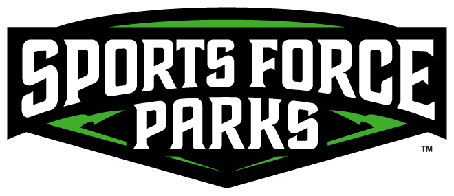

Aspiring Full-Stack Developer with a strong ability to learn fast and adapt to new technologies. I have experience working with both front-end and back-end development,
building clean and efficient code. While I do not have a formal degree, I make up for it with hands-on experience and a drive to constantly improve.
I am looking for opportunities to contribute to innovative projects and grow with a talented team.
Education
Quaker Digital Academy
High School Diploma | 2014
Member of the Nation Junior Honor Society
Work Experience
Confirmer & Sales Support | Erie Home
2022-Present
Scheduled and confirmed appointments for roofing estimates using Lead Perfection and Salesforce
Communicated with customers and coordinated with field technicians
Managed high call volumes in a fast-paced environment
Ensured smooth operations and excellent customer service
Maintenance Supervisor | Sports Force Parks

2018-2021
Prepared fields for various sports tournaments
Maintained the landscapes of the park
Performed routine maintenance on various small engine equipment
Supervised a crew of 4-8 individuals
Layout Designer | Sandusky Register
2017-2018
Designed and laid out newspaper pages in Adobe InDesign
Arranged text and images while keeping a consistent look
Worked with editors and reporters to adjust layouts and story placement
Edited news stories before they went to print
Sportswriter & Photographer | Norwalk Reflector
2014-2017
Reported on local high school sports, writing hundreds of articles
Worked under tight daily deadlines to deliver content
Gained hands-on experience in photography, shooting sports and local events
Co-hosted the NR Sports Podcast, focusing on high school sports and occasionally diving into professional sports topics